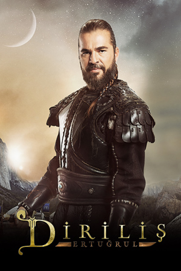

Katagoriler
Katagoriler
Moğollarla zorlu bir mücadele veren Ertuğrul Bey, kutlu davasının peşinden gidebilmek için kardeşlerinden ayrılmak zorunda kalmıştı. Ertuğrul Bey’e inanan Kayılar, bu ayrılığın ardından yollara düştüler. Çetin geçen koşullarda Karacadağ sınırlarına kadar ilerleyen Kayıları burada bambaşka bir dünya bekliyordu. Yeni yurtları onlara farklı bir iklim, farklı topraklar ve farklı insanlar sunacaktı. Ertuğrul Bey, kutlu davasına giden yolda daha güçlü ve daha acımasız düşmanları olacağının farkındaydı. Peki, yeni düşmanlarını alt edebilmek için kılıcının keskinliği yetecek miydi?
Ertuğrul Bey artık başka bir dünyadaydı. Ve bu dünya da at koşturmak daha çok akıl, cesaret ve sabır istiyordu. Karşısına daha güçlü ve daha acımasız olarak çıkan Tapınakçılar, Ertuğrul Bey’i zafer için yeni yöntemler bulmaya zorlayacaktı. Zira Tapınakçıların gizli eli olan Simon bir kılıç darbesiyle öldürülemeyecek kadar zeki ve güçlüydü. Üstelik Simon yalnız da olmayacaktı. Ertuğrul Bey, Simon’a destek olan Müslümanları öğrendiğinde ne yapacaktı? Ertuğrul Bey, kılıçların sustuğu, akıl oyunlarının konuştuğu bir cehennemin içindeydi. Peki, aklı onu bu cehennemin ateşinden koruyabilecek miydi?
Karacadağ etekleri birçok Türkmen Obasına yurt olmuştu. Fakat aslen Tatar olan Çavdaroğlu Obası, aralarında en güçlü olanlarıydı. Bu güçlerini ise başarısızlığa tahammülü olmayan ve obayı demir yumrukla yöneten Candar Bey’den alıyorlardı. İktidarını yıllarca koruyan Candar Bey, en büyük imtihanını evlatlarıyla verecekti. Candar Bey’in büyük oğlu Ural’ın ihtirası obanın kaderini belirleyecekti. Çavdaroğlu ve Kayı Obası arasında yaşanacak gerilimi Candar Bey’in hamleleri durdurabilecek miydi? Ertuğrul Bey, Çavdaroğlu Obasından hiç beklemediği teklifler ve tehditler alacaktı. Peki, Kayılar ve Çavdaroğulları’nın yolu nerede ve nasıl kesişecekti? Ertuğrul’un vereceği her karar hem obanın kadınları hem de beyleri için yeni sonuçlara gebeydi.
Ertuğrul artık obanın beyi olmuştu. Obada yeni sorunlar baş göstermişti. Göç yolunda yorgun düşen Kayılar ülküleri ve nefisleri arasında sıkışıp kalmıştı. Onlar için bu imtihan hiç kolay olmayacaktı. Dışarıda düşmanlarıyla mücadele veren Ertuğrul Bey’i içerde ise yeni sorunlar bekliyordu. Göç yolunda sevdiklerinden ayrı düşen ve kıtlık tehlikesiyle karşı karşıya kalan Kayılar birliklerini koruyabilecekler miydi?
Ertuğrul Bey artık başka bir dünyadaydı. Ve bu dünya da at koşturmak daha çok akıl, cesaret ve sabır istiyordu. Karşısına daha güçlü ve daha acımasız olarak çıkan Tapınakçılar, Ertuğrul Bey’i zafer için yeni yöntemler bulmaya zorlayacaktı. Zira Tapınakçıların gizli eli olan Simon bir kılıç darbesiyle öldürülemeyecek kadar zeki ve güçlüydü. Üstelik Simon yalnız da olmayacaktı. Ertuğrul Bey, Simon’a destek olan Müslümanları öğrendiğinde ne yapacaktı? Ertuğrul Bey, kılıçların sustuğu, akıl oyunlarının konuştuğu bir cehennemin içindeydi. Peki, aklı onu bu cehennemin ateşinden koruyabilecek miydi?
Karacadağ etekleri birçok Türkmen Obasına yurt olmuştu. Fakat aslen Tatar olan Çavdaroğlu Obası, aralarında en güçlü olanlarıydı. Bu güçlerini ise başarısızlığa tahammülü olmayan ve obayı demir yumrukla yöneten Candar Bey’den alıyorlardı. İktidarını yıllarca koruyan Candar Bey, en büyük imtihanını evlatlarıyla verecekti. Candar Bey’in büyük oğlu Ural’ın ihtirası obanın kaderini belirleyecekti. Çavdaroğlu ve Kayı Obası arasında yaşanacak gerilimi Candar Bey’in hamleleri durdurabilecek miydi? Ertuğrul Bey, Çavdaroğlu Obasından hiç beklemediği teklifler ve tehditler alacaktı. Peki, Kayılar ve Çavdaroğulları’nın yolu nerede ve nasıl kesişecekti? Ertuğrul’un vereceği her karar hem obanın kadınları hem de beyleri için yeni sonuçlara gebeydi.
Ertuğrul artık obanın beyi olmuştu. Obada yeni sorunlar baş göstermişti. Göç yolunda yorgun düşen Kayılar ülküleri ve nefisleri arasında sıkışıp kalmıştı. Onlar için bu imtihan hiç kolay olmayacaktı. Dışarıda düşmanlarıyla mücadele veren Ertuğrul Bey’i içerde ise yeni sorunlar bekliyordu. Göç yolunda sevdiklerinden ayrı düşen ve kıtlık tehlikesiyle karşı karşıya kalan Kayılar birliklerini koruyabilecekler miydi?
Etiketler:
HD Diriliş Ertuğrul TRT 1 Canlı izle izle, Diriliş Ertuğrul TRT 1 Canlı izle, Diriliş Ertuğrul TRT 1 Canlı izle Canlı Yayını izle, Diriliş Ertuğrul TRT 1 Canlı izle webten izle, Diriliş Ertuğrul TRT 1 Canlı izle Dizileri izle, Diriliş Ertuğrul TRT 1 Canlı izle Yayın Akışı, Diriliş Ertuğrul TRT 1 Canlı izle Programları izle, Diriliş Ertuğrul TRT 1 Canlı izle
izle, Diriliş Ertuğrul TRT 1 Canlı izle Seyret, Diriliş Ertuğrul TRT 1 Canlı izle TV, Diriliş Ertuğrul TRT 1 Canlı izle Televizyonu izle, Diriliş Ertuğrul TRT 1 Canlı izle Kanalı, Diriliş Ertuğrul TRT 1 Canlı izle bedava izle, Diriliş Ertuğrul TRT 1 Canlı izle kesintisiz izle, bedava
Diriliş Ertuğrul TRT 1 Canlı izle izle, internetten Diriliş Ertuğrul TRT 1 Canlı izle seyret
Diriliş Ertuğrul TRT 1 Canlı izle HD izle
Diriliş Ertuğrul TRT 1 Canlı izle canlı izle
Loading...